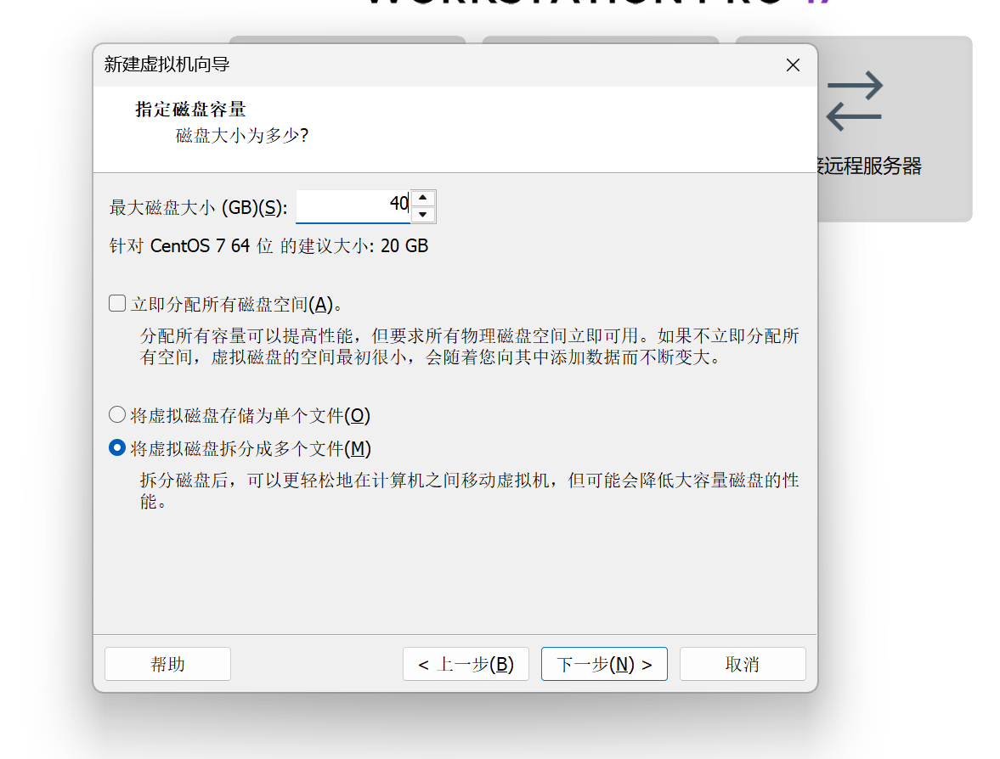
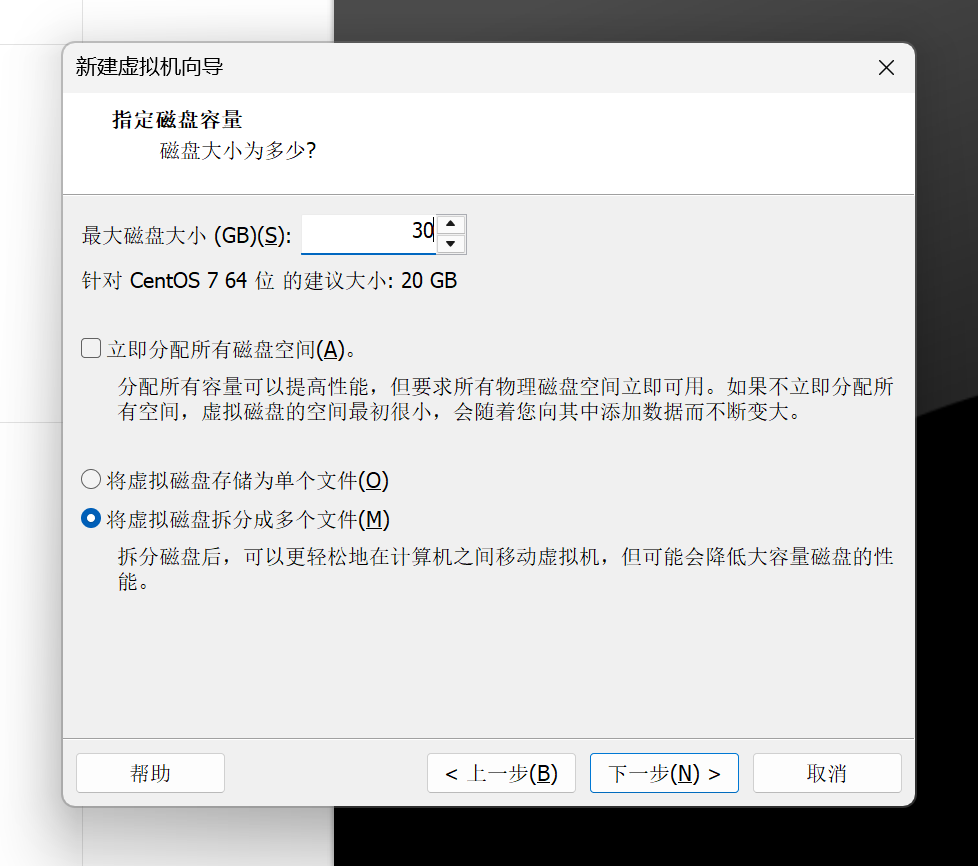
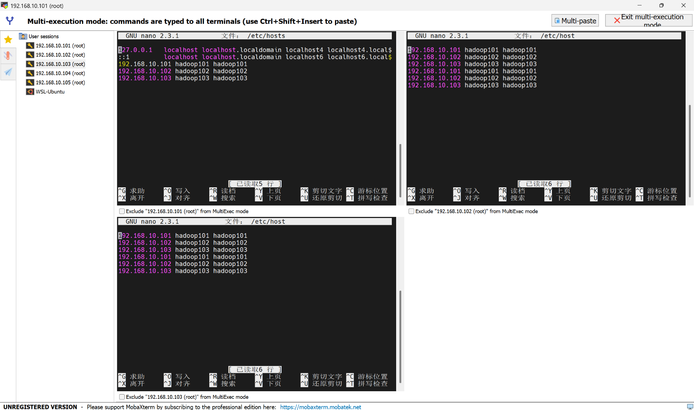
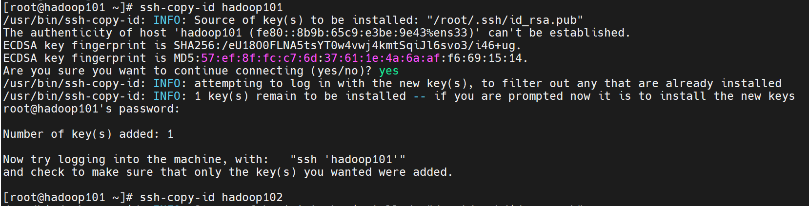
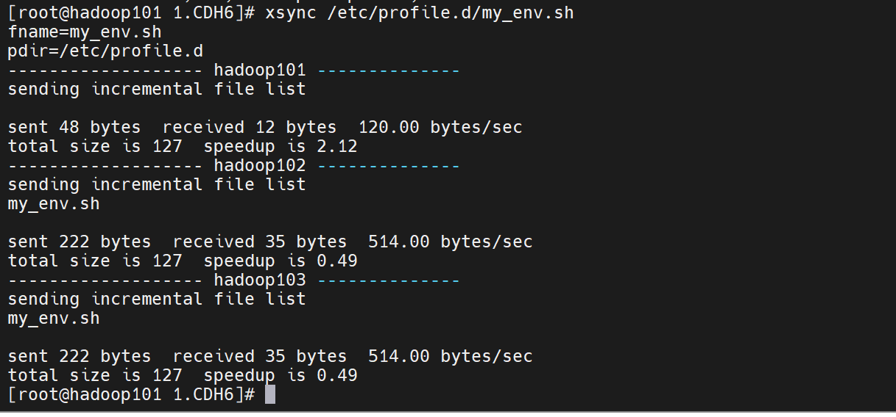
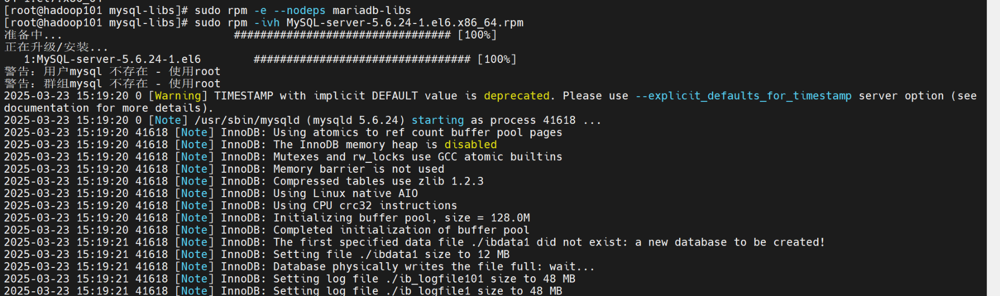
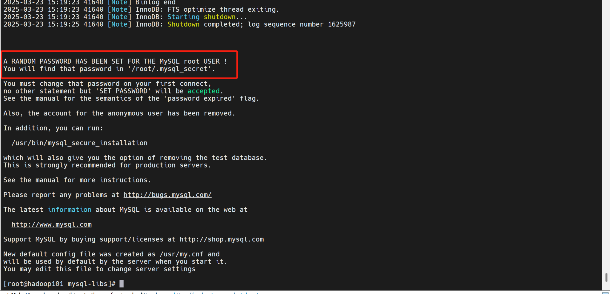
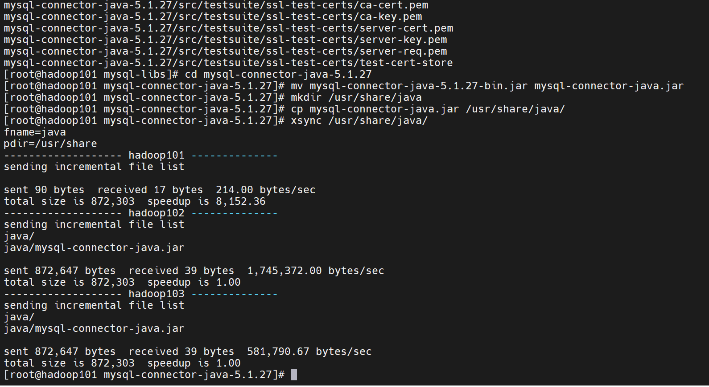

Kerberos和Sentry
1、CDH
CDH（Cloudera's Distribution Including Apache Hadoop）是Cloudera公司推出的一款企业级大数据平台发行版，它集成了Apache Hadoop生态系统中的核心组件及周边工具，旨在简化大数据集群的部署、管理和运维。

（1）CDH的核心组件
- 分布式存储：HDFS
- 资源管理：YARN
- 计算框架：MapReduce（传统）、Spark（内存加速）、Hive（基于MapReduce/Tez）、Impala（MPP架构）、Spark Streaming、Flink、HBase（基于HDFS的分布式列存储）
（2）CDH的管理层
- CDH的管理层由Cloudera Manager（CM）提供，Cloudera Manager是一个集中式管理工具，提供图形界面和API
- CM的主要作用有：
- 安装与部署：自动化安装CDH组件。
- 配置管理：统一管理服务配置。
- 监控与诊断：实时监控集群健康状态、性能指标。
- 服务管理：启动、停止、重启服务。
- 升级与维护：支持滚动升级。
- CM的核心组件有：
- Server：运行CM服务，协调管理任务。
- Agent：运行在每个节点上，执行CM Server的指令。
- Database：存储CM的元数据（如MySQL、PostgreSQL）。
2、Kerberos
Kerberos 是一种 网络身份认证协议，用于在非安全网络环境中实现安全的身份验证，防止敏感信息（如密码）在传输中被窃取。它广泛应用于企业级系统（如Hadoop集群）中，确保用户和服务之间的双向认证与通信安全。

（1）Kerberos的核心角色
- 客户端（Client）：请求访问服务的用户或应用程序。
- 服务端（Service Server）：提供具体服务的资源（如HDFS、HBase）。
- 密钥分发中心（KDC, Key Distribution Center）
- 认证服务器（AS, Authentication Server）：验证用户身份，发放临时票据（TGT）。
- 票据授权服务器（TGS, Ticket Granting Server）：根据TGT发放服务访问票据。
（2）Kerberos的关键术语
- 票据（Ticket）：加密的凭证，用于证明用户身份和权限。
- TGT（Ticket Granting Ticket）：用户首次登录后获得的临时票据，用于后续申请服务票据。
- 会话密钥（Session Key）：临时生成的加密密钥，用于客户端与服务端之间的通信加密。
- 领域（Realm）：Kerberos管理的安全域（如EXAMPLE.COM），所有实体（用户、服务）需在同一领域内注册。
3、Sentry
Sentry 是 Apache 开源的一个权限管理框架，专为 Hadoop 生态系统设计，用于控制用户或用户组对数据资源的访问权限（如 Hive 表、HDFS 目录、Impala 数据库等）。它通过统一的策略引擎实现 基于角色的访问控制（RBAC），是大数据平台（如 CDH）中实现数据安全的核心组件之一。

（1）sentry的核心概念
- 访问控制：Sentry 提供基于角色（Role-Based Access Control, RBAC）的权限管理，允许管理员为用户或组分配特定权限（如 SELECT、INSERT 等），控制对数据和资源的访问。
- 与 Hadoop 生态集成：在 CDH 中，Sentry 与 Kerberos 结合，形成完整的安全体系：Kerberos 负责“认证”（Authentication），Sentry 负责“授权”（Authorization）。
- 统一权限管理 ：Sentry 提供了一个集中式的权限管理模型，管理员可以通过 SQL 语句或界面管理权限，避免了分散在各个组件中的权限配置。
（2）sentry的工作原理（以Hive为例）
- 用户已通过 Kerberos 认证，并通过 Beeline 或 Hue 提交 Hive 查询
- HiveServer2 接收查询请求后，调用 Sentry 插件
- sentry 插件将用户身份和查询语句发送到 Sentry Server，从而检查用户所属的角色对表的权限
- 如果权限通过，Hive 继续编译和执行查询；如果权限不足，Hive 返回错误给用户。
4、部署CHD
（1）准备虚拟机
- 对于hadoop101，由于它需要安装cdh server，所以需要更大的内存，这里我们设置内存为4G，磁盘容量为40G

- 对于其它两台机器，按照如下的配置，即设置内存为2G，磁盘容量为30G

- 准备虚拟机的其它步骤均与k8s集群部署中相同，这里不再重复，还有一点需要注意的是主机名配置，这里我的三台虚拟机的主机名设置为了hadoop101、hadoop102、hadoop103，主机名的配置位置在如下步骤
- 接着我们依然和之前k8s部署的时候一样，使用MobaXterm连接每台虚拟机，对每台机器配置名称与ip的对应关系
- 先点击multi-execution，以同时对三台虚拟机进行相同的操作，复制完命令后可以通过右上角的multi-paste进行同步粘贴
- 编辑配置文件
nano /etc/hosts
- 输入以下内容，将主机名与IP关联
192.168.10.101 hadoop101 hadoop101
192.168.10.102 hadoop102 hadoop102
192.168.10.103 hadoop103 hadoop103
- 输入完毕后使用ctrl+x，然后按y，接着再回车即可退出文件编辑

- 然后我们退出同步操作界面，回到hadoop101的连接界面，配置其对其它节点的免密登录
- 输入下面的命令，并连续按三次enter键
ssh-keygen -t rsa
- 接着依次输入下面的命令，每输入一条命令后输入yes，再输入虚拟机的密码，这个密码即我们之前在虚拟机配置时设置的密码，这样就配置了hadoop101对其它节点的免密登录
ssh-copy-id hadoop101
ssh-copy-id hadoop102
ssh-copy-id hadoop103

- 上传所需脚本bin-kerberos.zip至hadoop101，在右侧文件夹栏的空白处右键鼠标，选择upload to current folder
- 解压所上传的脚本，并授予脚本权限，接着进入脚本目录并测试是否可以使用
unzip bin-kerberos.zip
cd bin-kerberos/
chmod 77 bin/*
cd bin
xsync
- xsync脚本用于同步文件或目录到其他主机，xcall.sh脚本用于在多台主机上批量执行相同命令
（2）安装JDK
- 接下来我们在每个节点上安装JDK
- 我们依然在hadoop101上进行操作，先进入/opt目录下创建两个文件夹以存放资源包
cd /opt
mkdir module
mkdir software
- 而后在目录/opt/module下上传文件夹 1.CDH6，上传方式参考之前上传压缩包的方式，注意这里需要先进入目录/opt/module下再上传
- 接着进入所上传的文件目录下
cd /opt/module/1.CDH6/
- 安装JDK
rpm -ivh oracle-j2sdk1.8-1.8.0+update181-1.x86_64.rpm
- 接着编辑环境变量
- 进入文件编辑页面
nano /etc/profile.d/my_env.sh
- 添加如下内容
export JAVA_HOME=/usr/java/jdk1.8.0_181-cloudera
export CLASSPATH=.:$CLASSPATH:$JAVA_HOME/lib
export PATH=$PATH:$JAVA_HOME/bin
- 输入完毕后使用ctrl+x，然后按y，接着再回车即可退出文件编辑
- 应用更改并检查是否生效，能看到java的版本就是生效了
source /etc/profile.d/my_env.sh
java -version
- 分发环境
xsync /usr/java/
xsync /etc/profile.d/my_env.sh

- 进入每个节点的操作界面，均执行下面的命令以应用更改
source /etc/profile.d/my_env.sh
- 使用脚本查看每个节点上的应用是否生效
xcall.sh java -version
（3）配置mysql
- 接下来在每个节点上配置mysql
- 首先需要更换源以便下载
sudo mv /etc/yum.repos.d/CentOS-Base.repo /etc/yum.repos.d/CentOS-Base.repo.backup
sudo curl -o /etc/yum.repos.d/CentOS-Base.repo http://mirrors.aliyun.com/repo/Centos-7.repo
- 然后我们安装mysql所需的依赖
yum install libaio
yum -y install autoconf
- 接着下载mysql的安装包并安装
wget https://downloads.mysql.com/archives/get/p/23/file/MySQL-shared-compat-5.6.24-1.el6.x86_64.rpm
wget https://downloads.mysql.com/archives/get/p/23/file/MySQL-shared-5.6.24-1.el6.x86_64.rpm
rpm -ivh MySQL-shared-5.6.24-1.el6.x86_64.rpm
rpm -ivh MySQL-shared-compat-5.6.24-1.el6.x86_64.rpm
- 安装MySQL服务端
cd /opt/module/1.CDH6
unzip mysql-libs.zip
cd mysql-libs/
sudo rpm -e --nodeps mariadb-libs
sudo rpm -ivh MySQL-server-5.6.24-1.el6.x86_64.rpm


- 查看初始的随机密码，用于后续登录
cat /root/.mysql_secret
- 查看mysql状态并启动
service mysql status
service mysql start
service mysql status
- 接着安装mysql的客户端
rpm -ivh MySQL-client-5.6.24-1.el6.x86_64.rpm
- 登录mysql并修改密码，这里mysql的用户名是root，密码即刚刚查看的密码，也就是这里的vlEM7tomcvfOJMGR，需要替换为自己查看到所生成的随机密码
mysql -uroot -pvlEM7tomcvfOJMGR
SET PASSWORD=PASSWORD('000000');
exit
- 使用修改后的密码进行登录，可以进行一些基本的mysql操作，注意，语句use mysql;是必须执行的，后续操作需要用到，而其它的查询语句可以不执行，只是为了验证mysql的基本功能
mysql -uroot -p000000
show databases;
use mysql;
show tables;
desc user;
select User, Host, Password from user;
- 而后配置只要是root用户+密码，在任何主机上都能登录MySQL数据库
update user set host='%' where host='localhost';
delete from user where host!='%';
flush privileges;
exit;
（4）安装CM
- 接下来我们安装CM
- 首先进入mysql，并创建各组件需要的数据库，而后退出
mysql -uroot -p000000
GRANT ALL ON scm.* TO 'scm'@'%' IDENTIFIED BY 'scm';
CREATE DATABASE scm DEFAULT CHARACTER SET utf8 DEFAULT COLLATE utf8_general_ci;
CREATE DATABASE hive DEFAULT CHARSET utf8 COLLATE utf8_general_ci;
CREATE DATABASE oozie DEFAULT CHARSET utf8 COLLATE utf8_general_ci;
CREATE DATABASE hue DEFAULT CHARSET utf8 COLLATE utf8_general_ci;
CREATE DATABASE sentry DEFAULT CHARACTER SET utf8 DEFAULT COLLATE utf8_general_ci;
exit;
- 接着解压mysql的依赖包，并将mysql-connector-java-5.1.27-bin.jar拷贝到/usr/share/java路径下，而后重命名
cd /opt/module/1.CDH6/mysql-libs
tar -zxvf mysql-connector-java-5.1.27.tar.gz
cd mysql-connector-java-5.1.27
mv mysql-connector-java-5.1.27-bin.jar mysql-connector-java.jar
mkdir /usr/share/java
cp mysql-connector-java.jar /usr/share/java/
xsync /usr/share/java/

- 我们再创建一个cloudera-manager目录,并将CDH安装文件移动到该目录下
mkdir /opt/cloudera-manager
cd /opt/module/1.CDH6
tar -zxvf cm6.3.1-redhat7.tar.gz
cd cm6.3.1/RPMS/x86_64/
mv cloudera-manager-agent-6.3.1-1466458.el7.x86_64.rpm /opt/cloudera-manager/
mv cloudera-manager-server-6.3.1-1466458.el7.x86_64.rpm /opt/cloudera-manager/
mv cloudera-manager-daemons-6.3.1-1466458.el7.x86_64.rpm /opt/cloudera-manager/
- 安装CM，先在hadoop101上执行安装，而后再将安装包进行分发
cd /opt/cloudera-manager/
xsync /opt/cloudera-manager/
rpm -ivh cloudera-manager-daemons-6.3.1-1466458.el7.x86_64.rpm
- 在其它两个节点，即hadoop102和hadoop103上安装CM，这两个节点上都需要执行下面的命令
cd /opt/cloudera-manager/
rpm -ivh cloudera-manager-daemons-6.3.1-1466458.el7.x86_64.rpm
- 接下来安装前置环境，首先在hadoop101上安装
yum install bind-utils psmisc cyrus-sasl-plain cyrus-sasl-gssapi fuse portmap fuse-libs /lib/lsb/init-functions httpd mod_ssl openssl-devel python-psycopg2 MySQL-python libxslt
- 安装卡在下面的步骤时，输入y即可（表示yes）
- 在hadoop102和hadoop103上，需要将之前的换源操作执行一遍，再进行安装
sudo mv /etc/yum.repos.d/CentOS-Base.repo /etc/yum.repos.d/CentOS-Base.repo.backup
sudo curl -o /etc/yum.repos.d/CentOS-Base.repo http://mirrors.aliyun.com/repo/Centos-7.repo
yum install bind-utils psmisc cyrus-sasl-plain cyrus-sasl-gssapi fuse portmap fuse-libs /lib/lsb/init-functions httpd mod_ssl openssl-devel python-psycopg2 MySQL-python libxslt
- 而后安装cm agent，同样地，每台虚拟机都要执行
rpm -ivh cloudera-manager-agent-6.3.1-1466458.el7.x86_64.rpm
- 接着回到hadoop101，修改agent的配置文件，主要为了让所有节点都知道server是谁
nano /etc/cloudera-scm-agent/config.ini
- 修改下面的部分的值为hadoop101
server_host=hadoop101
- 输入完毕后使用ctrl+x，然后按y，接着再回车即可退出文件编辑
- 然后使用脚本分发该配置文件到所有节点
xsync /etc/cloudera-scm-agent/config.ini
- 然后我们继续在hadoop101上安装server
rpm -ivh cloudera-manager-server-6.3.1-1466458.el7.x86_64.rpm
- 接下来我们上传CDH包到parcel-repo，parcel-repo就相当于CDH的本地仓库
cd /opt/module/1.CDH6
mv CDH-6.3.2-1.cdh6.3.2.p0.1605554-el7.parcel* /opt/cloudera/parcel-repo
mv manifest.json /opt/cloudera/parcel-repo
cd /opt/cloudera/parcel-repo
mv CDH-6.3.2-1.cdh6.3.2.p0.1605554-el7.parcel.sha1 CDH-6.3.2-1.cdh6.3.2.p0.1605554-el7.parcel.sha
- 然后我们修改CDH的数据库文件，让它指向mysql
nano /etc/cloudera-scm-server/db.properties
- 在com.cloudera.cmf.db.type=mysql这一行下添加如下内容
com.cloudera.cmf.db.host=hadoop101:3306
com.cloudera.cmf.db.name=scm
com.cloudera.cmf.db.user=scm
com.cloudera.cmf.db.password=scm
com.cloudera.cmf.db.setupType=EXTERNAL
- 注释掉最后一行：com.cloudera.cmf.db.setupType=INIT
- 输入完毕后使用ctrl+x，然后按y，接着再回车即可退出文件编辑
- 接着我们可以使用如下命令导入数据，要求输入密码，密码即为我们在之前文件中所配置的参数：scm
/opt/cloudera/cm/schema/scm_prepare_database.sh mysql scm scm
- 这里还需要将所有节点上的防火墙关闭，下面的命令需要在所有节点上执行一遍
systemctl stop firewalld
- 最后，我们在主节点启动server，即在hadoop101上执行下面的命令
systemctl start cloudera-scm-server
- 并在所有节点启动agent，即在hadoop101、hadoop102以及hadoop103上均需执行下面的命令
systemctl start cloudera-scm-agent

- 在浏览器访问下面的ip即可看到CDH的web界面，注意这里的ip地址需改为自身的hadoop101虚拟机所配置的ip地址，后面的端口号不用改变
（5）CDH集群部署
- 使用admin作为用户名和密码进行登录
- 点击继续
- 勾选“接受”，点击继续
- 选择免费版，点击继续
- 点击继续
- 集群名称使用默认的Cluster 1，再点击继续
- 选择当前管理的主机，并勾选全部的虚拟机，再点击继续
- 点击继续
- 等候安装完毕
- 接下来需要对网络环境以及主机性能进行检测，分别点击这两个按钮
- 经过检查后如果出现下面的警告，我们需要进行修复，我们点击“显示检查器结果”
- 可以看到警告的出现是由于下面的问题，直接按照它所给出的提示进行操作就可以了，这里均采用临时修改的方式
- 回到虚拟机命令行，所有虚拟机均需要运行下面三条指令
sudo sysctl vm.swappiness=10
echo never > /sys/kernel/mm/transparent_hugepage/defrag
echo never > /sys/kernel/mm/transparent_hugepage/enabled
- 而后返回cdh的web页面，点击“重新运行”，便可以看到主机性能的检查也通过了，接着我们点击继续
- 接下来就可以安装各种组件了，我们先选择“自定义服务”并勾选HDFS、YARN、Zookeeper
- 每台虚拟机的角色分配如下
- 审核更改中的配置均使用默认配置，点击继续
- 接着等待安装完毕即可
- 安装完成
- 然后我们就可以进入到cdh的界面了
- 这里所存在的警告大多是因为当前集群的规模过小了，点击配置可以看到具体问题，由于是实验环境，所以可以暂时忽略
- 接着我们安装Hive
- 我们在CDH的主界面点击添加服务

- 选择Hive，再点击继续

- 主机角色分配如下

- 对数据库做如下的配置，并测试连接

- 审核更改这里按默认配置就可以

- 然后等待配置完成即可

- 到这里就完成hive的配置了

- 接下来我们配置sentry
- 回到CDH的主界面，点击添加服务

- 选择sentry

- 主机角色分配如下

- 数据库设置如下，配置完点击测试连接，再点击继续

- 等待配置完成

- 最后我们安装hue，在CDH的主界面点击添加服务

- 选择hue，再点击继续

- 勾选第一个，再点击继续

- 主机角色分配如下

- 对数据库做如下的配置，并测试连接

- 等待配置完成

5、Kerberos认证
（1）配置kerberos
- 安装kerberos的server，只在hadoop101执行
yum install -y krb5-server krb5-workstation krb5-libs

- 安装kerberos的client，下面的指令均需要在hadoop102和hadoop103上执行
yum install -y krb5-workstation krb5-libs
- 而后回到hadoop101编辑kdc.conf文件，完整内容如下
nano /var/kerberos/krb5kdc/kdc.conf
- 修改操作如下
# EXAMPLE.COM修改为HADOOP.COM
# 添加如下字段，用于配置生命周期
max_life = 1d
max_renewable_life = 7d
# 去掉aes256-cts:normal，这个需要额外的jar包
- 而后回到hadoop101编辑kdc.conf文件，完整内容如下

- 编辑krb5.conf文件，完整内容如下
nano /etc/krb5.conf
- 修改操作如下
# 放开注释掉的default_realm = EXAMPLE.COM，并修改EXAMPLE.COM为HADOOP.COM
# 注释掉这一行：default_ccache_name = KEYRING:persistent:%{uid}
# 添加udp配置：udp_preference_limit = 1
# 放开[realms]下的注释，并配置为：
HADOOP.COM = {
kdc = hadoop101
admin_server = hadoop101
}
- 其完整内容如下

- 分发krb5.conf文件
xsync /etc/krb5.conf

- 生成kerberos数据库
kdb5_util create -s
- 而后设置密码，可以也设为000000

- 赋予Kerberos管理员所有权限，编辑下面文件，将EXAMPLE更改为为HADOOP
nano /var/kerberos/krb5kdc/kadm5.acl

- 启动kerberos服务
systemctl start krb5kdc
systemctl start kadmin
- 查看启动状态
systemctl status krb5kdc
systemctl status kadmin
- 设置开机自启
systemctl enable krb5kdc
systemctl enable kadmin

（2）Kerberos数据库操作
- 本地登录
kadmin.local
- 创建kerberos主体
addprinc admin/admin
- 查看所有主体
list_principals
- 退出登录
quit

- 也可以采用-q参数的方式，而不进入kadmin.local命令行
kadmin.local -q "addprinc admin/admin"
kadmin.local -q "list_principals"

（3）Kerberos主体认证
- 两种认证方式
- 第一种是使用knit认证
- 先查看未认证时的情况
klist
- 进行认证，而后输入密码000000，可以看到已经认证成功了
kinit admin/admin
- 而后我们销毁认证以使用另一种认证方式
kdestroy
- 再次查看，当前已经没有认证了
klist
- 第二种是keytab密钥文件认证
- 生成主体admin/admin的keytab文件到指定目录/root/admin.keytab
kadmin.local -q "xst -norandkey -k /root/admin.keytab admin/admin@HADOOP.COM"
- 使用keytab进行认证
kinit -kt /root/admin.keytab admin/admin
- 再次查看认证凭证
klist

（4）CDH启用Kerberos安全认证
- 先在hadoop101上，为CM创建管理员主体/实例，而后设置密码为：000000
kadmin.local -q "addprinc cloudera-scm/admin"

（4）CDH启用Kerberos安全认证
- 而后在web页面启动kerberos

- 全部勾选，再点击继续

- kdc信息的具体配置如下

- 无需勾选，点击继续

- 这里输入我们刚刚创建的主体：cloudera-scm/admin，以及密码：000000

- 点击继续

- 点击继续

- 等待配置完成

- 这里就已经成功在cdh上启用kerberos了

- 我们可以点击管理-安全以查看生成的kerberos凭据


（5）测试Kerberos安全认证
- 先销毁凭据
kdestroy
- 查看凭据是否被销毁，可以看到当前没有凭据
klist
- 查看hdfs，可以看到没有权限
hadoop fs -ls /
- 创建用户
kadmin.local -q "addprinc test/test@HADOOP.COM"
- 设置密码：000000
- 进行用户认证
kinit test/test@HADOOP.COM
- 输入刚刚设置的密码：000000
- 再次访问hdfs，发现可以访问了
hadoop fs -ls /

6、配置Sentry
（1）修改相关配置
- 回到CDH的主界面，点击hive

- 点击配置，并在搜索框输入：hiveserver2 启用模拟，而后取消勾选并保存更改

- 而后继续在搜索框搜索：启用数据库中的存储通知，勾选并保存更改

- 而后继续在搜索框搜索：sentry，勾选sentry并保存更改

- 然后我们回到CDH主界面并选择hdfs

- 点击配置，并在搜索框中输入：启用访问控制列表，勾选并保存更改

- 而后在搜索框中输入：启用 sentry 同步，勾选并保存更改

- 回到主界面，点击重启，应用更改项

- 点击重启过时服务

- 点击立即重启

- 等待重启完成

（2）测试sentry
- 我们回到虚拟机的命令行，在三个虚拟机上均需创建角色并设置密码
useradd reader
useradd writer
passwd reader
passwd writer
- 而后我们回到CDH的主界面，点击hue

- 再进入hue的webui

- 使用hive作为用户名，000000作为初始密码登录hue

- 点击右上角的管理用户

- 添加reader组和writer组


- 添加reader用户和writer用户到对应的组里


- 添加hive组，并将hive用户添加到组里

- 我们回到hadoop101的命令行，先为hive服务建立kerberos凭证，再使用hive作为用户获取凭证，而后进入hive，创建student表
kadmin.local -q "addprinc hive/hive@HADOOP.COM"
kinit hive/hive@HADOOP.COM
hive
create table student(
id string comment '学号',
name string comment '姓名',
sex string comment '性别',
age string comment '年龄'
) comment '学生表';

- 然后我们回到hue的webui，点击安全性

- 先点击Roles，再点击“+”号，创建reader_role和writer_role，分别授予select和insert权限


- 接着我们点击右上角，注销当前的hive用户

- 使用reader用户登录，密码使用000000

- 进行查询，成功
select * from student

- 进行插入，失败，报错为权限不够
insert into student values('1','孙悟空','男','100');

- 接着我们点击右上角，注销当前的reader用户

- 使用writer用户登录，密码使用000000

- 进行查询，失败，报错为权限不够
select * from student

- 进行插入
insert into student values('1','孙悟空','男','100');
- 由于资源限制，这里AM请求的最小资源无法满足，因此YARN拒绝了该任务的启动请求，但是可以看到该命令已经转化为了mapreduce任务，没有出现权限报错，只要能据此了解sentry的工作方式即可